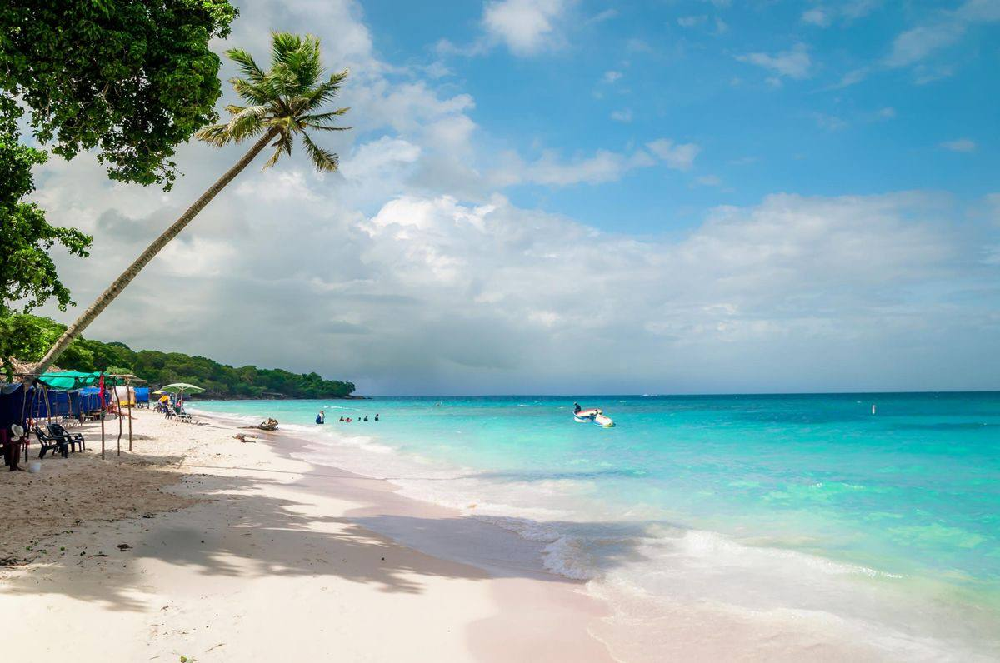
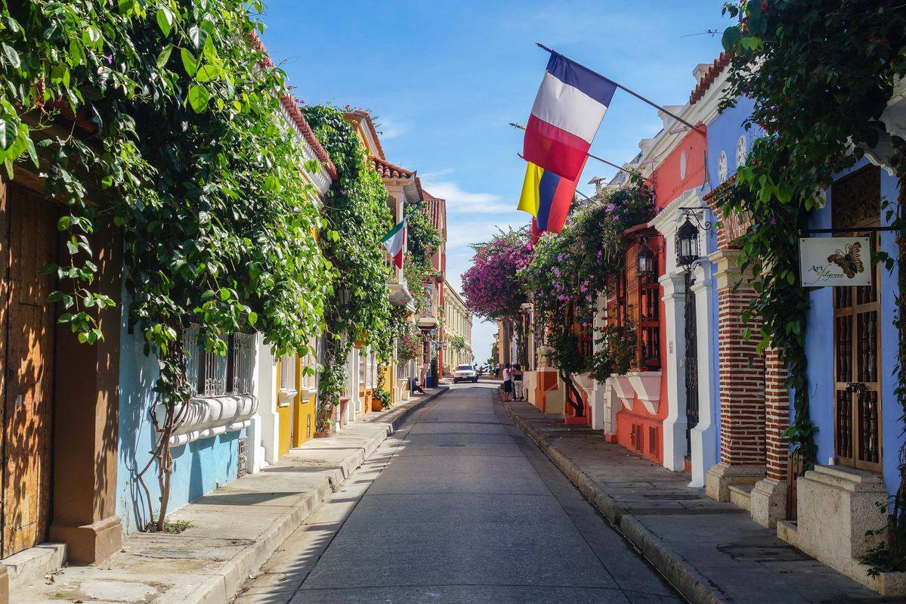
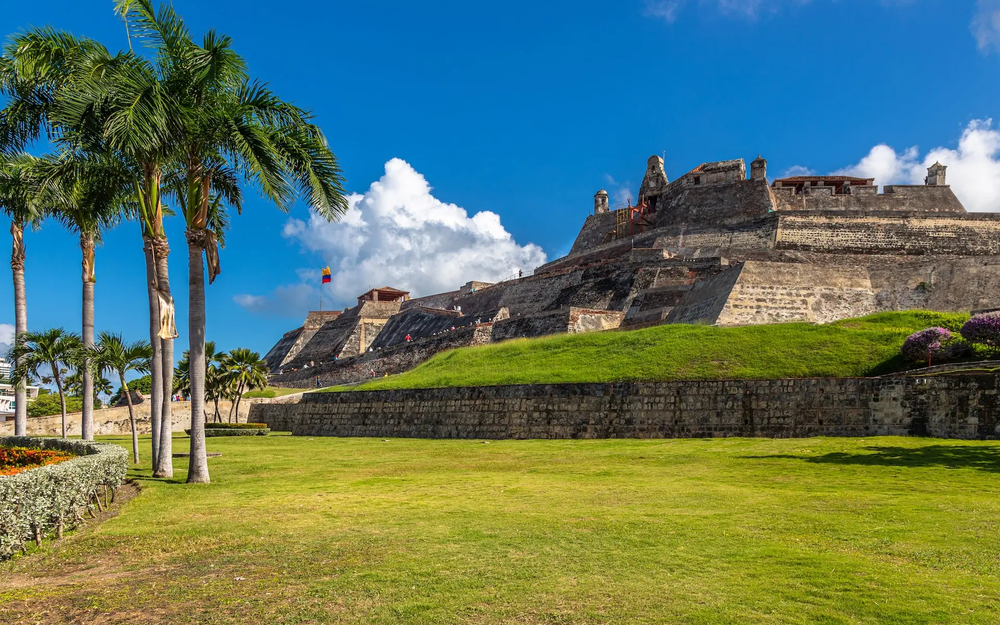
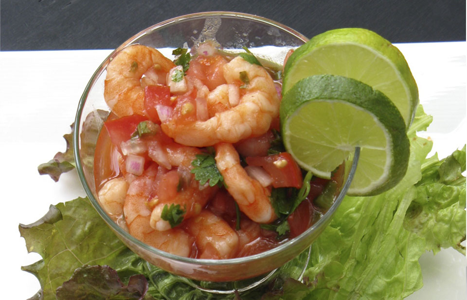
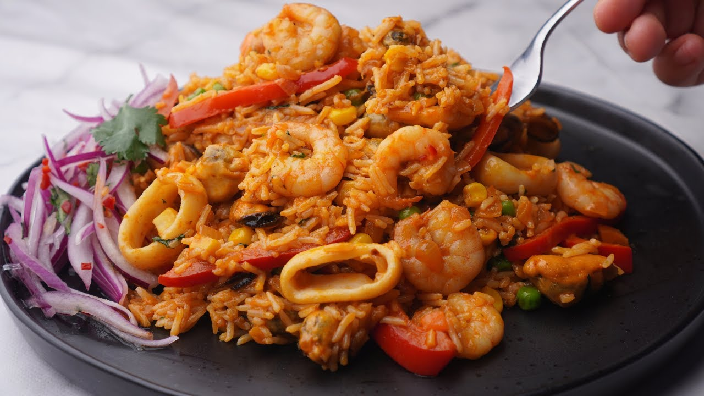
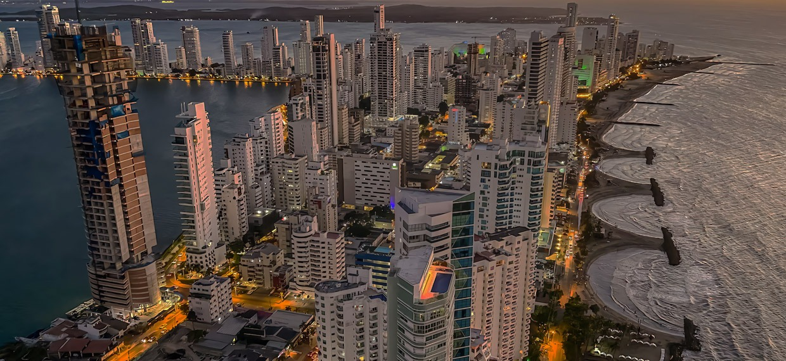
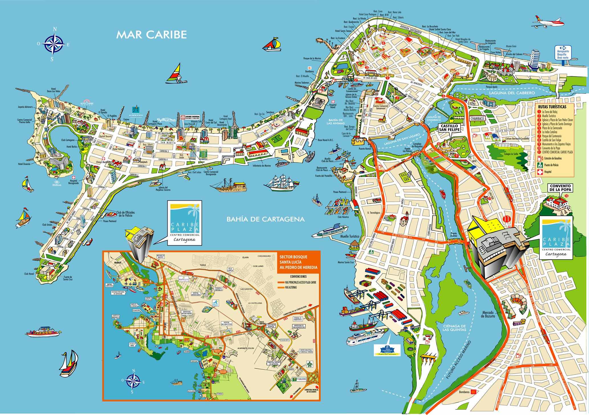

🇨🇴 Patrimonio de la Humanidad UNESCO
La Ciudad Heroicadonde el Caribeabraza laHistoria
Cartagena de Indias — historia colonial, playas caribeñas y cultura viva en el corazón de Colombia.





493años de historia
Centro históricoPatrimonio vivo del Caribe
Sobre ODYSSEY
Conocer la guía maestra de Cartagena
La llave maestra para vivir Cartagena como un habitante ilustre
ODYSSEY es tu guía turística inteligente de Cartagena de Indias — la ciudad amurallada declarada Patrimonio de la Humanidad por la UNESCO en 1984.
Navega sin barreras por toda la plataforma. Inicia sesión con contraseña o código único al correo únicamente cuando desees calificar un sitio o suscribirte a sus novedades culturales.
26 Sitios georreferenciados
Tarifas oficiales DATT y Transcaribe
Alertas de sitios al correo
Mapa con radar 2dsphere
Concierge IA 24/7
Acceso con Código OTP
Servicios
Ocho módulos diseñados para el navegante moderno
Todo lo que necesitas para planear el viaje perfecto a Cartagena
Catálogo 01
Guía de Lugares
Explora lugares turísticos de Cartagena organizados por categorías: playas, museos, sitios históricos, gastronomía y más.
Explorar Catálogo 02Información de Hoteles
Consulta el Top 6 de hoteles de Cartagena con descripción, ubicación y características. Información turística de referencia.
Descubrir Catálogo 03Guía de Viaje Completa
Historia, gastronomía, playas, clima y consejos prácticos para planear tu estadía perfecta en La Heroica.
Leer guía Catálogo 04Chatbot ODYSSEY
Resuelve tus dudas sobre transporte, clima, actividades y más con nuestro asistente inteligente disponible las 24 horas.
Conversar Catálogo 05Eventos y Festivales
Hay Festival, FICCI, Fiestas de Independencia y más. Mantente al día con los eventos culturales de Cartagena.
Ver agenda Catálogo 06Guía de Transporte
Transcaribe, taxis, InDriver, yates a las Islas del Rosario. Todo sobre cómo moverte por Cartagena con costos reales.
Planear ruta Catálogo 07Mapa Interactivo
Explora la ciudad con nuestro mapa con puntos turísticos, filtros por categoría y panel de información detallada.
Abrir mapa Catálogo 08Alertas y Reseñas
Recibe novedades de tus sitios favoritos en tu correo y comparte tu experiencia.
SuscribirmeDestinos recomendados por la comunidad
Ver todos los lugaresDestinos que definen el Caribe
SITIOS HISTÓRICOS
Verificado
Castillo de San Felipe de Barajas
Barrio San Lázaro, Pie de la Popa
Ver detalles y activar alertas
SITIOS HISTÓRICOS
Verificado
Torre del Reloj y Plaza de los Coches
Entrada al Centro Histórico frente al Camellón de los Mártires
Ver detalles y activar alertas
SITIOS HISTÓRICOS
Verificado
Baluarte de Santo Domingo y Murallas
Murallas del Centro Histórico frente al mar
Ver detalles y activar alertas
SITIOS HISTÓRICOS
Verificado
Las Bóvedas de Santa Clara
San Diego, entre los baluartes de Santa Clara y Santa Catalina
Ver detalles y activar alertas
MUSEOS
Verificado
Palacio de la Inquisición (MUHCA)
Plaza de Bolívar, Centro Histórico
Ver detalles y activar alertas
SITIOS HISTÓRICOS
Verificado
Convento y Mirador de la Popa
Cerro de la Popa, Cartagena
Ver detalles y activar alertas GASTRONOMÍA
GASTRONOMÍAMercado de Bazurto
Avenida Pedro de Heredia, Sector Bazurto
Ver detalles GASTRONOMÍA
GASTRONOMÍAPortal de los Dulces
Plaza de los Coches, Centro Histórico
Ver detalles
GASTRONOMÍALa Cevichería
Calle Stuart #7-14, Plaza de San Diego
Ver detalles
GASTRONOMÍARestaurante Celele
Calle del Espíritu Santo #29-200, Getsemaní
Ver detallesGASTRONOMÍACafé del Mar (Baluarte de Santo Domingo)
Baluarte de Santo Domingo, Murallas de Cartagena
Ver detallesMUSEOSPalacio de la Inquisición (MUHCA)
Plaza de Bolívar, Centro Histórico
Ver detallesMUSEOSMuseo del Oro Zenú
Plaza de Bolívar con Calle San Juan de Dios
Ver detallesMUSEOSMuseo Naval del Caribe
Calle San Juan de Dios #3-62, Centro Histórico
Ver detallesMUSEOSCasa Museo Rafael Núñez
Carrera 2 #41-89, Barrio El Cabrero
Ver detalles
PLAYAS
Playa Blanca (Península de Barú)
Isla de Barú, a 45 minutos por puente o lancha
Ver detalles PLAYAS
PLAYASParque Nacional Natural Islas del Rosario
Mar Caribe, 45 min en lancha desde Muelle de la Bodeguita
Ver detalles
PLAYASPlayas de Bocagrande y Castillogrande
Avenida San Martín y Carrera 1ra, Bocagrande
Ver detallesPLAYASIsla de Cholón (Barú)
Ensenada de Cholón, Península de Barú
Ver detallesSITIOS HISTÓRICOS
Castillo de San Felipe de Barajas
Barrio San Lázaro, Pie de la Popa
Ver detallesSITIOS HISTÓRICOSTorre del Reloj y Plaza de los Coches
Entrada al Centro Histórico frente al Camellón de los Mártires
Ver detallesSITIOS HISTÓRICOSBaluarte de Santo Domingo y Murallas
Murallas del Centro Histórico frente al mar
Ver detallesSITIOS HISTÓRICOSLas Bóvedas de Santa Clara
San Diego, entre los baluartes de Santa Clara y Santa Catalina
Ver detallesSITIOS HISTÓRICOS
Convento y Mirador de la Popa
Cerro de la Popa, Cartagena
Ver detallesSITIOS HISTÓRICOSSantuario y Claustro de San Pedro Claver
Plaza San Pedro Claver #01-30, Centro Histórico
Ver detallesSITIOS HISTÓRICOSFuerte de San Fernando y Bocachica (Tierra Bomba)
Corregimiento de Bocachica, Isla de Tierra Bomba
Ver detalles
MOTOR DE ITINERARIOS NOSQL + IA
Diseña tu ruta ideal por Cartagena en segundos
Selecciona tus días de estancia, estilo de viaje y presupuesto. Nuestro motor construirá y almacenará en MongoDB un plan detallado con costos estimados en COP.
Tu plan día por día aparecerá aquí
Haz clic en "Generar Mi Itinerario Personalizado" para obtener horarios de mañana, tarde y noche con costos reales en Cartagena.
Gastronomía
Sabores del Caribe y cocina de fogón
La cocina cartagenera es una fusión de tradiciones indígenas, africanas y españolas
Arepa de Huevo
El snack más icónico de Cartagena. Masa de maíz frita rellena de huevo. Se encuentra en todo el Centro Histórico.
Arroz con Mariscos
Arroz cocinado en leche de coco con camarones, chipi chipi y langostinos frescos del Caribe.
Jugos Tropicales
Maracuyá, tamarindo, guanábana y corozo. El corozo es el sabor más cartagenero que existe.
Carimañola de Yuca
Masa de yuca frita rellena de carne o queso. Parte esencial de la cultura gastronómica caribeña.
Ceviche Cartagenero
Camarones y chipi chipi marinados en limón con ají, cebolla morada y tomate. Fresco y perfecto para el calor.
Ron & Chocolate
Degustación de ron colombiano con chocolate artesanal. Una experiencia sensorial única en El Arsenal de Getsemaní.
Clima
Planifica según las brisas del Caribe
Clima tropical todo el año — siempre es una buena época para visitar La Heroica
Temporada Seca
29°C · 74%Época ideal. Sol garantizado, pocas lluvias, perfecta para playas e Islas del Rosario. Alta temporada turística.
Inicio de Lluvias
30°C · 79%Lluvia breve por las tardes. Ciudad menos congestionada, precios más bajos. Ideal para cultura e historia.
Temporada de Lluvias
28°C · 84%Aguaceros cortos pero intensos. Muy económico. El mar fosforescente de Isla Grande es espectacular en esta época.
Fiestas y Eventos
29°C · 80%Fiestas de Independencia (11 nov), inicio de temporada seca, Hay Festival. ¡La ciudad en su máxima expresión!
Alojamiento
Ver todos los hotelesHoteles de leyenda y claustros virreinales
Barrio San Diego
Sofitel Legend Santa Clara
Convento franciscano del siglo XVII convertido en el hotel más icónico de Colombia. Piscina colonial, spa y tres restaurantes.
Ver ficha y alertasPlaza Santa Teresa
Charleston Santa Teresa
Hotel boutique en convento restaurado. Tres restaurantes, spa completo y piscina en azotea con vistas a la ciudad amurallada.
Ver ficha y alertasCiudad amurallada
Bastión Luxury Hotel
Integrado en las murallas coloniales del siglo XVII. Terrazas con vista al mar Caribe, gastronomía de autor y diseño contemporáneo.
Ver ficha y alertasAgenda
Ver todos los eventosPróximos Eventos

Avenida Santander frente a las murallas
Gran Bando y Desfile de Comparsas de la Independencia
Desfile multitudinario de carrozas folclóricas, disfraces tradicionales (el Capuchón, las Palenqueras, el Mohán) y bandas de mú...
Calles del Centro Histórico, Getsemaní y Avenida Santander
Fiestas de la Independencia de Cartagena del 11 de Noviembre
La fiesta cívica y popular más grande de la ciudad. Conmemora el día de 1811 cuando Cartagena se convirtió en el primer territo...
Teatro Adolfo Mejía y Claustro de Santa Teresa
Festival Internacional de Música de Cartagena (CIMF)
Conciertos de música clásica de orquestas sinfónicas internacionales y agrupaciones de cámara en escenarios coloniales como la ...
Exploración georreferenciada 2dsphere
Cartografía viva de baluartes, islas y playas
Explora el nuevo Centro Cartográfico con radar de proximidad en tiempo real, selector de capas (Editorial, Nocturno, Satélite) y audioguía integrada.
- Radar MongoDB 2dsphere de distancias exactas
- Audioguía interactiva en cada punto

Radar Activo26 Puntos GeorreferenciadosViajeros
Lo que dicen nuestros usuarios
★★★★★
"ODYSSEY me ayudó a descubrir rincones de Cartagena que nunca habría encontrado solo. El mapa interactivo y el chatbot son increíbles para planear el día."
★★★★★
"Gracias a la guía de gastronomía encontré restaurantes locales auténticos en Getsemaní. La arepa de huevo y el ceviche cartagenero fueron lo mejor del viaje."
★★★★★
"La información sobre las Islas del Rosario y el transporte en yate fue perfecta. Llegamos a Playa Blanca sin ningún problema. ¡Cartagena es un paraíso!"